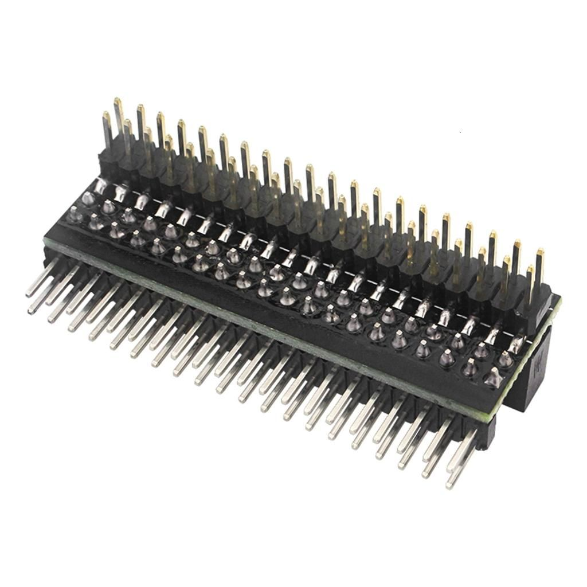

GPIO-расширитель 2x20 для Raspberry Pi
РазъёмыЭто 2×20-контактный GPIO-расширитель (удлинитель/стекер) для Raspberry Pi с 40-пиновым разъёмом. Он нужен, чтобы поднять или вывести GPIO-разъём выше и удобнее подключать HAT/платы расширения.
Позиция соответствует стандартному 40-контактному GPIO-разъёму Raspberry Pi формата 2×20 с шагом 2,54 мм. Такой расширитель не добавляет новых сигналов, а только механически удлиняет/поднимает существующие линии GPIO, питания и земли. Используется при стекировании плат, в корпусах с малым зазором и для удобства монтажа дополнительных модулей. Для Raspberry Pi официально применяется 40-pin GPIO header на современных платах семейства, а HAT-совместимые аксессуары рассчитаны именно на этот формат. Типовой вариант — пасс-сквозной (stacking) female/male header или удлинённый штыревой/гнездовой разъём.